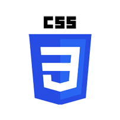
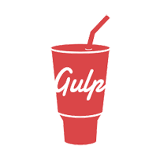

Html Version
Shreyu is built using Bootstrap v4.3.1. The code is super clean and well structured. The extensive use of SCSS along with Gulp build tools, allows easy modification of look and feel. The setup is one time only and highly recommended. However, if you are not planning to make any modification for styling, you might want to use already provided dist (compiled) version as well.
 
What's included
Extract the zip file you received after purchase and you would find the exact below files and folders:
-
shreyu/html --- ├──
dist- A pre-compiled folder containing html, assets including css, js, etc -
├──
src- ├──
fonts- fonts files - ├──
images- images files - ├──
html- ├──
partials- partials - including top bar, left sidebar, menus, etc - ├──
templates- reusable partials templates e.g. dashboard
- ├──
- ├──
js- all javascript files - ├──
scss- all scss (sass) files
- ├──
- ├──
gulpfile.js - ├──
package.json - ├──
yarn-lock.json - ├──
README.md
- ├──
Pre-requisites
We are using gulp. It allows to have complete automatation for build. In case if you don't know - Gulp is a a toolkit for automating painful or time-consuming tasks in frontend development workflow, so you can stop messing around and build something. You can read it more about it here. Please follow below steps to install and setup all pre-requisites:
- Nodejs
Make sure to have the Node.js installed & running in your computer. If you already have installed nodejs on your computer, you can skip this step.
-
Yarn
Yarn is a package manager and dependency management. It allows easy management of all the third party dependency and plugins.
Make sure to have the Yarn installed & running in your computer. If you already have installed yarn on your computer, you can skip this step.
- Gulp
Make sure to have the Gulp installed & running in your computer. If you already have installed gulp on your computer, you can skip this step.
- Git
Make sure to have the Git installed & running in your computer. If you already have installed git on your computer, you can skip this step
Getting Started
Once you have all pre-requisites installed and running, you are ready to get start with the template. First, go to the root folder (the folder created when you extract the zip) where the package.json is available and run the following command:
yarn install
This will download all required dependencies defined in package.json
file. Once it
finished running the command, it will generate a folder name
node_modules where you'll be able to see downloaded
packages.
Now you're good to go in running the template and view it in browser by running the command below:
yarn start
The template should be up and running in your browser.
You can also create a production ready build by running the command below:
yarn build
This will create a folder named dist in same folder.
You
might want to take this folder and deploy on root of your web
server.
Customization
You can easily customize various elements including navbar, topbar,
form
elements etc by simply editing Sass files available in
/src/scss directory. You can also remove unneeded
components from
app.scss file.
How to add new page?
We have provided a starter page (check
src/html/pages-starter.html) which helps you to
create new page. Please
note following some important points.
-
Make sure that you have included
css/bootstrap.min.css,css/app.min.css, css/icons.min.cssandjs/vendor.min.js, js/app.min.jsin your html - Most of the default/basic form elements along with few advanced elements are available and bundled in the above css and js and so you don't need to include any css or js separately.
- Note that, few elements e.g. charts, data tables, calendar, maps etc. requires you to include corresponding css and js files in your html.
How to change colors?
In order to change colors (including primary, secondary, success, info, danger, warning, etc.), do the following:
- A file
src/scss/_variables.scssis containing the overridden colors and other configurations of bootstrap. You can change any values here and it would get reflected in any bootstrap based components or elements.
How to change footer?
In order to add, change or remove any ui elements from
footer or
sidebar, simply edit in file
src/html/partials/footer.html. The change would
be reflected in all files automatically.
Layout and Sidebar
You can change or customize the overall layout or left side navigation easily. There are examples available for horizontal nav, dark theme, RTL, condensed side nav, fixed width (boxed), etc. You can check them under layouts menu option. Additionally, you can also modify the left side nav, topbar, etc.
How to change left side nav width?
In order to change the width of left side navigation bar, open a
file
src/scss/_variables.scss and change the value of
variable
$leftbar-width. The default value is set to
240px.
How to change background or menu text color?
In order to change the background color, open a file
src/scss/scss/_variables.scss and change the value
of
variable
$bg-leftbar-light the default light value is set to
#ffffff, $bg-leftbar-dark the default
dark
value is set to
#323742.
When you change the background color, you might want to change
the
color of menu accordingly. To change
the color of menu item, change the variable
$menu-item
(Default is set to #4B4B5A).
Similarly, change the value of variables
$menu-item-hover and
$menu-item-active.
You can change other styles by making modifications in
src/scss/custom/structure/_left-menu.scss.